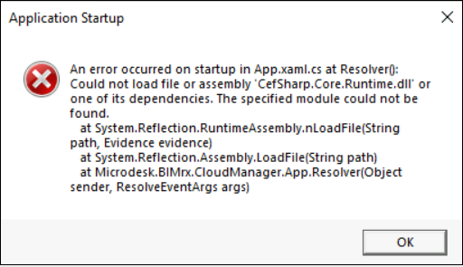
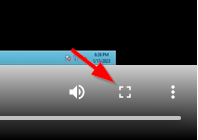
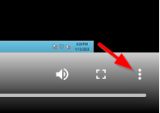
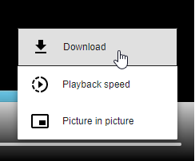

System Requirements
- A computer with a 64-bit processor. This allows maximization of system performance and provides support for the largest size files possible. While much has been been written on this topic, please refer to 32-bit vs 64-bit: Understanding what these options really mean for a concise explanation.
Please Note — If, for whatever reason, Naviate Cloud Manager must run in a 32-bit environment, please notify the Naviate Cloud Manager Support Team, who will be happy to provide a 32-bit compatible version. But also please note, there will be a limitation in maximum file size (4Gb) and general performance in certain operations.
- .Net 4.8 framework from Microsoft. Currently up-to-date Windows 10 operating systems will have .NET 4.8 installed.
If it is necessary to install .NET 4.8, choose the Runtime version. Please refer to the video below for more information regarding a missing .NET 4.8 framework and installation. - The Microsoft Visual C++ Redistributables runtime libraries must be installed on the computer. This is generally done automatically with Windows 10 and recent releases of Windows Server operating systems. If you are running an up-to-date version of Windows 10, there is nothing to further to be done.
If, however, a machine on which Naviate Cloud Manager is installed is missing these components, the following message appears when running the application:

In this case, it is necessary to install the following executables (also available from the preceding link):
Please refer to the previous link (Microsoft Visual C++ Redistributables runtime libraries) and following video for more information regarding redistributable installation.
For more information regarding symptoms of missing requirements and installation of the .NET 4.8 and Visual C++ Redistributable dependencies, please refer to the following video:
To enlarge the video to full screen, press the small box near the lower right corner of the video window:

To download the video file, press the menu button to the right of the full screen button.

This will bring up a menu providing a Download selection.
